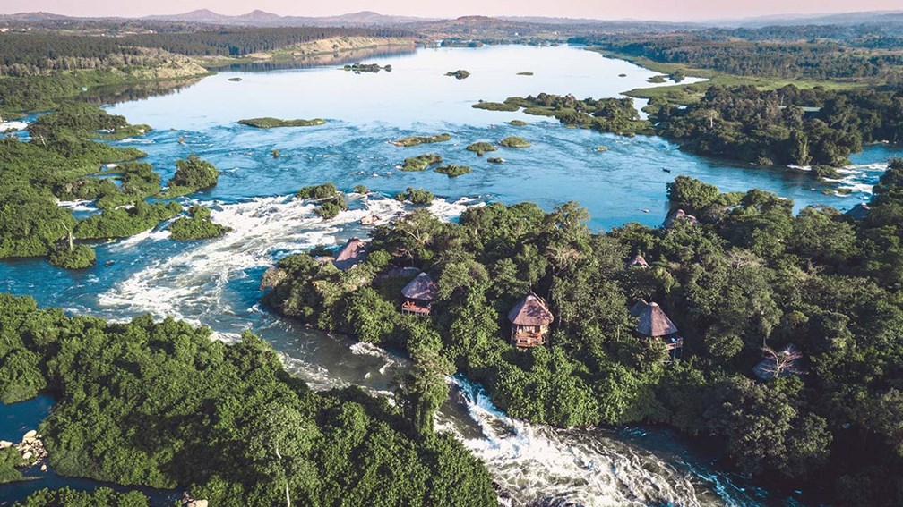
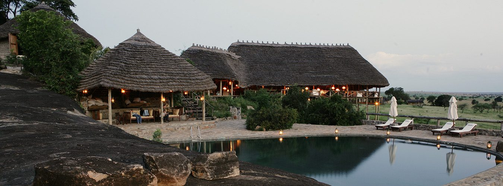
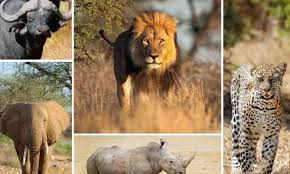
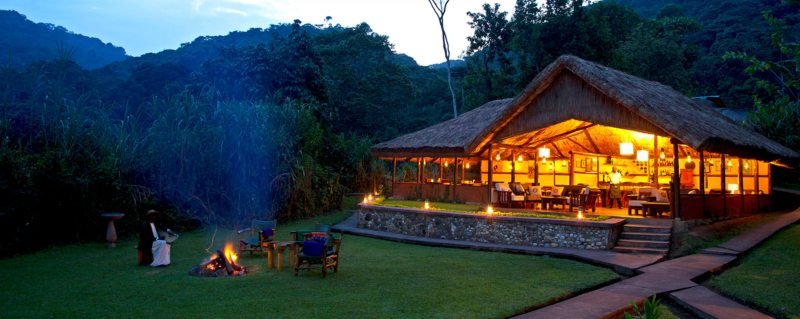
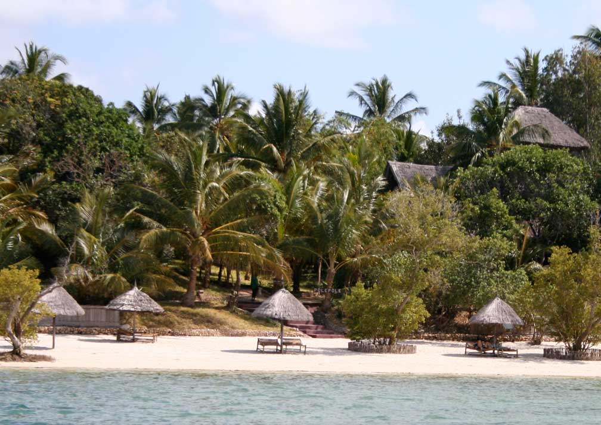

Evocation du voyage Flecchia en Ouganda et Zanzibar du 16 au 30 aout 2020
Voyage sous organisation Agence Safari Okawongo
Dimanche 16 aout 22h15: Depart de Paris CDG pour Entebbe via Addis Abbeba
Lundi 17 aout arrivee à Jinja au Lemala Wild Water Lodge

Journee de rafting sur le Nil sauvage a la rencontre des rapides de niveau 5 des chutes de Bujagali.
Du mercredi 19 au samedi 22 aout sejour dans le Kidepo national Park au Apoka Safari Lodge

Safaris "savane" de jour et de nuit dans le plus beau des parcs ougandais a la recherche des Big 5

Ne pas s'approcher de trop près quand même
Du samedi 22 au mardi 25 août sejour dans la Parc National de Bwindi au Gorilla Sanctuary Forest Camp

2 Treks (4-6h) a la rencontre des Grands Gorilles

Du mardi 25 au samedi 29 août Sejour sur l'ile de Mafia dans l'archipel de Zanzibar au Pole Pole Lodge

Au menu différentes activités
| Journée safari | Journée Sport&Leisure | Journée Voyage |
|---|
| 5 | 5 | 2 |
Pour plus d'informations se référer au descriptif complet de l'agence ...
Quotation Agence Safari Okawango
...ou encore à l'office du tourisme de l'Ouganda et de la Tanzanie
Site web Ouganda Tourism
Site web Tanzania Tourism